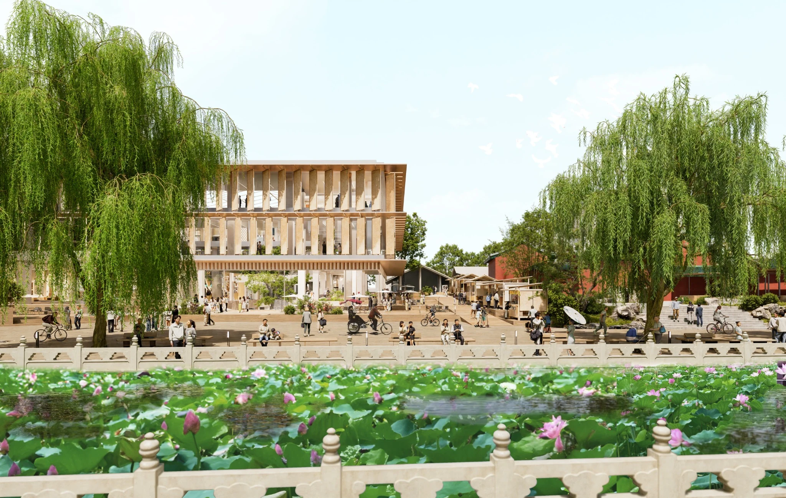
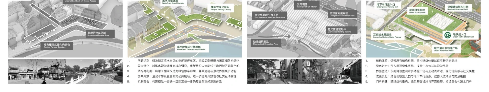
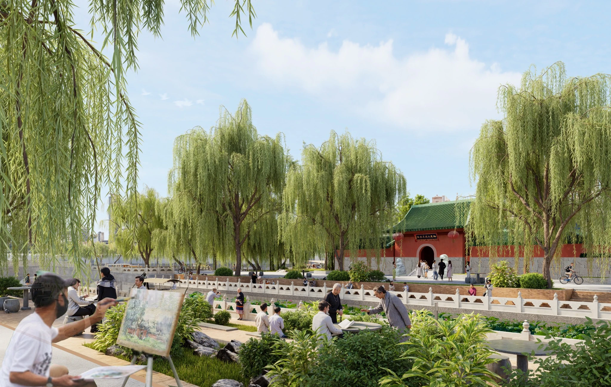
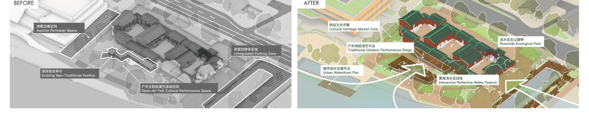

Waterfront+
Shichahai Waterfront & Heritage Renewal
Gold Award · Urban Design · China Human Settlements Academic Year Award, 2025
How can a historic waterfront become part of everyday neighbourhood life?
Shichahai is shaped by water, hutong courtyards, cultural landmarks and everyday commerce. Yet proximity to the lakes does not necessarily translate into public access or meaningful neighbourhood connections.
Waterfront+ proposes selective openings, adapted courtyards and interconnected civic spaces. Rather than a continuous new strip of waterfront development, it reconnects water, heritage and daily life through precise interventions across the existing urban fabric.
A layered waterfront, interrupted connections.
Lakes, commercial streets, temple precincts and fine-grained residential neighbourhoods overlap in Shichahai. Their spatial proximity does not always translate into shared public life.
Water, streets and courtyards.
The identity of Shichahai extends beyond its shoreline. Urban routes, temple grounds and residential lanes produce different kinds of public and semi-public space.
The combined diagrams establish the district's geographical and historical layers before introducing the areas of intervention.
The lake is close. Connections are fragmented.
Broken pedestrian links, uneven access and disrupted courtyard relationships separate the waterfront from local everyday life.
The complete eight-panel analysis examines the interacting urban conditions as one integrated diagnosis, rather than separating the diagrams into isolated illustrations.
01New-build disruption and fragmented public space
02Severed waterfront links and architectural discord
03Scattered greenery and limited waterfront access
04Functional disorder and courtyard imbalance
From a disconnected edge to a civic landscape.
The urban-design strategy works through networks and places: larger pedestrian connections and smaller, selective adaptations to streets, buildings and courtyards.
Reveal the relationships already there.
The contrasting views shift the focus from disconnected fragments to a waterfront connected with its surrounding neighbourhoods.
The objective is not a uniform new waterfront, but stronger links between places with distinct histories and uses.
Intervene through connections, not replacement.
The framework identifies points where selective access, adaptive uses and landscape links can support a larger civic network.
Buildings, movement and open space operate together rather than as isolated architectural objects.
A coherent network of focused changes.
Four complementary strategies address landscape, public nodes, circulation and new uses across the historic district.
01Landscape continuity
02Civic and cultural nodes
03Pedestrian and mobility links
04Complementary neighbourhood programs
One waterfront, three civic interfaces.
The masterplan links commercial gateways, cultural landmarks and residential courtyards while allowing each place a distinct degree of public access.
A network of places, not one waterfront object.
Selective interventions connect routes toward the water while preserving the diversity of inherited buildings, neighbourhood thresholds and public spaces.
Commercial
Urban gateway as public ground.
Arriving at the waterfront.
The Di'anmen proposal brings commercial renewal, pedestrian movement and shared lakeside space into one coordinated intervention.
The complete presentation sheet unites the spatial vision with the corresponding before-and-after studies, so the main axonometric and detailed transformation diagrams can be read together.


Culture
Keeping heritage within everyday public life.
An inhabited cultural landscape.
At Huoshen Temple, new public landscape strengthens the relationship between the historic precinct and everyday life along the water.
The original composite sheet presents its full urban axonometric together with the corresponding before-and-after study as one continuous visual argument.


Northern district, in plan and section.
Read together, these architectural drawings clarify the relationship between the waterfront, inherited urban structures and new public spaces.
Community
Courtyards as units of gradual renewal.
Build upon existing courtyard life.
The neighbourhood study brings the proposed spatial strategy and its before-and-after comparisons back into one visual sequence.
Gradual adaptation creates opportunities for shared programs without requiring wholesale clearance of inherited fabric.
Shared space with neighbourhood thresholds.
In Baimi Xiejie, adapted courtyard buildings and a community library create new settings for gathering, reading and everyday exchange.
The interventions respect the smaller scale of residential life and the difference between public facilities and private courtyards.
Southern district, in plan and section.
The drawings document the relationship between neighbourhood programs, courtyard structure and routes connecting back to the waterfront.
Waterfront+ is an urban-design proposal. Ownership, resident agreements, conservation review and management of shared facilities would require further study before implementation. The related research separately considers the social and spatial consequences of waterfront renewal.
Whose Waterfront?
Public access, residential thresholds and the uneven benefits of renewal.
Read the research ↗Project credits
Collaborative design · Hao Chang & Mengzhe Lee
Shichahai, Beijing · 2024
Gold Award · Urban Design · China Human Settlements Academic Year Award, 2025